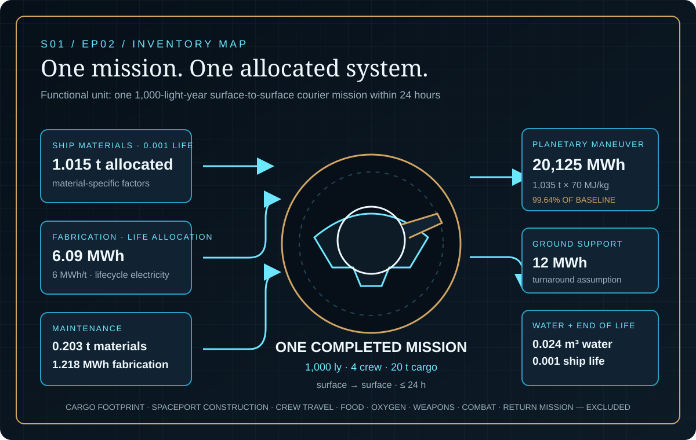
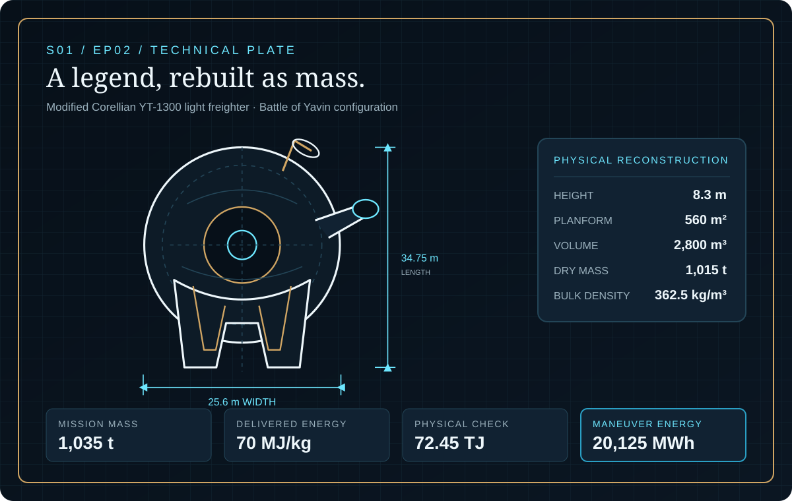
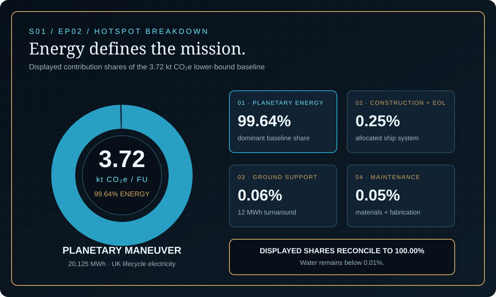

EPISODE #02 · SEASON I · MACHINES & WORLDS
Millennium Falcon
What does one 1,000-light-year interstellar courier mission cost the climate?
Science fiction, reconstructed through life-cycle logic. Impossible technologies, reconstructed as traceable systems.
THE SUBJECT
The fastest ship becomes a traceable courier system.
The approved episode locks the subject to a modified Corellian YT-1300 light freighter in its Battle of Yavin configuration. The physical reconstruction uses a 34.75 m length, 25.6 m width, 8.3 m height, 560 m² planform, 2,800 m³ volume and 1,015 t dry mass.
The assessed service is one 1,000-light-year mission completed within 24 hours, delivering four crew and 20 t of cargo from the surface of one Earth-like planet to another. The model includes the allocated ship, planetary maneuver energy, ground support, maintenance, water and end-of-life; hyperdrive energy remains an explicit unresolved sensitivity.
1,000 ly
One interstellar courier mission completed surface to surface.
4 crew + 20 t
The delivered crew and cargo define the completed service.
1,015 t dry mass
The Battle of Yavin reconstruction anchors the ship inventory.
99.64% energy
Planetary maneuver energy dominates the lower-bound baseline.
VISUAL MODEL
The ship ends. The system begins.
The mission connects allocated ship construction, planetary maneuver energy, ground support, maintenance, water and end-of-life to one completed courier service.


DETAILED LIFE CYCLE INVENTORY
Every mission has a manifest
Quantities, bases and factor treatments reproduce the approved episode. Contribution shares are shown only at the precision reported in the source.
| Stage | Component / activity | Activity data | Climate change | Modelling basis |
|---|---|---|---|---|
| Raw materials | Allocated ship materials | 1.015 t per mission | Within 0.25% construction + EOL | Material-specific factors; 0.001 spacecraft life allocated across 1,000 missions. |
| Manufacturing | Allocated manufacturing energy | 6.09 MWh | Within 0.25% construction + EOL | 6 MWh/t with life allocation; UK 2026 lifecycle electricity. |
| Operation | Planetary maneuver energy | 20,125 MWh | 99.64% | 1,035 t mission mass × 70 MJ/kg; UK 2026 lifecycle electricity. |
| Operation | Ground support electricity | 12 MWh | 0.06% | Turnaround assumption; UK 2026 lifecycle electricity. |
| Maintenance | Replacement materials | 0.203 t | Within 0.05% maintenance | 2%/year and 100 missions/year; weighted material factor. |
| Maintenance | Replacement fabrication | 1.218 MWh | Within 0.05% maintenance | 6 MWh/t replacement; UK 2026 lifecycle electricity. |
| Water + end of life | Supplied and treated water; ship processing | 0.024 m³ + 0.001 life | Water <0.01%; EOL within 0.25% | Four crew-day water plus life allocation; UK 2026 water and end-of-life factors. |
| Approved lower-bound baseline | 3.72 kt CO₂e | One completed functional unit before additional hyperdrive energy. | ||
Included
Raw materials, fabrication and assembly, departure and arrival energy, ground support, maintenance, water and end-of-life.
Excluded
Cargo product footprint, shared spaceport construction, crew travel to origin, food, oxygen, weapons, combat damage and the return mission.
Cut-off event
Four crew and 20 t of cargo delivered to the destination planetary pad after landing.
Parametric unknown
Hyperdrive energy stays inside the model as an unresolved sensitivity; no fictional demand is inserted into the baseline.
EMISSION FACTOR LEDGER
Real factors. Declared proxies.
UK 2026 factors are used only where activity, unit and boundary are compatible. The two non-baseline supply cases remain declared proxies.
| Activity | Unit | Factor | Source / status | Role in model |
|---|---|---|---|---|
| Primary aluminium | kg CO₂e/kg | 9.11358251 | UK Government 2026 | Material-specific ship and replacement inventory. |
| Primary steel | kg CO₂e/kg | 2.86158251 | UK Government 2026 | Material-specific ship and replacement inventory. |
| Average primary plastics | kg CO₂e/kg | 3.17050680 | UK Government 2026 | Material-specific ship and replacement inventory. |
| Lifecycle electricity | kg CO₂e/kWh | 0.18436 | UK 2026 generation + T&D + WTT | Approved baseline supply for fabrication, maneuver, support and replacement energy. |
| Low-carbon electricity | kg CO₂e/kWh | 0.011 | UNECE wind lifecycle proxy | Energy-supply sensitivity only. |
| Delivered liquid energy | kg CO₂e/kWh | 0.787125 | UK 2026 fuel + WTT; 40% efficiency proxy | Energy-supply sensitivity only. |
HOTSPOT
Gravity sends the largest invoice
Planetary maneuver energy contributes 99.64% of the approved lower-bound baseline. Construction and end-of-life, ground support and maintenance together account for the displayed residual 0.36%.

Lower-bound baseline
3.72 kt CO₂e
One completed mission before additional hyperdrive energy.
Planetary energy
99.64%
The dominant contribution in the approved baseline.
20 GWh hyperdrive
7.41 kt CO₂e
The mission result when the declared additional-energy case is applied.
Supply-only range
0.233–15.9 kt CO₂e
Energy demand, construction and maintenance stay fixed.
SENSITIVITY · HYPERDRIVE ENERGY
Unknown energy. Measurable consequence.
0 GWh additional: 3.72 kt CO₂e.
20 GWh additional: 7.41 kt CO₂e.
200 GWh additional: 40.6 kt CO₂e.
Only additional hyperdrive energy changes. All other inputs stay fixed.
SENSITIVITY · ENERGY SUPPLY
Same ship. A 68-fold range.
0.011 kg CO₂e/kWh · low-carbon proxy: 0.233 kt CO₂e.
0.18436 · UK 2026 lifecycle electricity: 3.72 kt CO₂e.
0.787125 · delivered liquid-energy proxy: 15.9 kt CO₂e.
Energy demand, construction and maintenance stay fixed. Only supply intensity changes.
INTERPRETATION
Energy, not alloy, defines the mission
The 3.72 kt CO₂e result is a lower bound rather than a complete hyperdrive footprint. The declared ship and maintenance system remains visible, but additional hyperdrive demand and the energy-supply choice control interpretation.
THE VERDICT
“The impossible speed matters less than the energy behind it.”